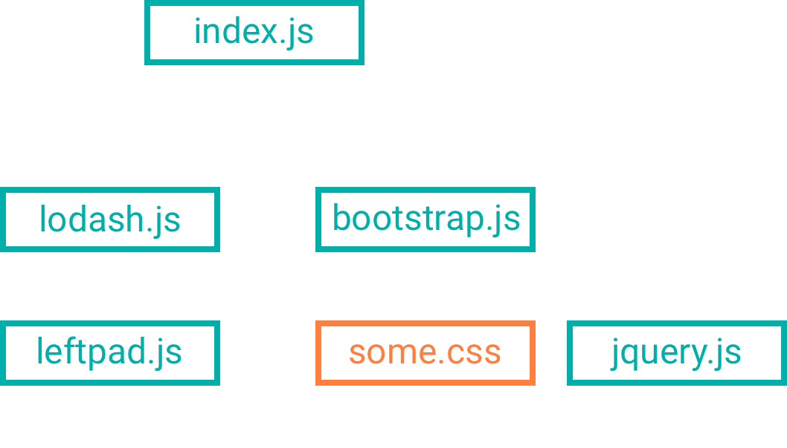
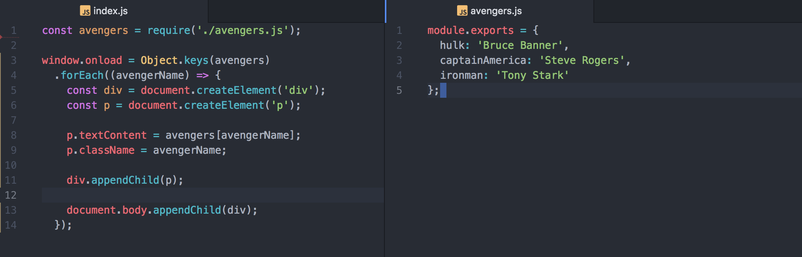

How does
work, anyway?
Blake Johnston
July 2018
What is Webpack?
Webpack is a module bundler
Write your browser JavaScript with modules
Story Time!

Yes, yes... but how does it work?
Disclaimer!

Key Concepts:
- Entry
- Output
- Mode
- Loaders
- Plugins
Also check out Sean Larkin's (Webpack Core team member) Key Concept talk.
Entry
A Totally Valid Webpack Config
module.exports = {
entry: './src/js/index.js',
output: './src/dist/bundle.js',
mode: 'development'
};
Our Project
Webpack Config
const path = require('path');
module.exports = {
mode: 'development',
entry: './src/js/index.js',
output: {
path: `${path.resolve(__dirname)}/dist`,
filename: 'bundle.js'
}
};
What's it actually doing?
(function () {
// webpack custom require code
webpackCustomRequire('entryFile.js');
})({
'filename1.js': function (/* args */) {
eval("your code as a string here");
},
'entryFile.js': function (/* args */) {
eval("your code here as a string")
}
});
The same as...
function runWebpack() {
// webpack custom require code
}
const jsFiles = {
'filename1.js': function (/* args */) {
eval("your code as a string here");
},
'entryFile.js': function (/* args */) {
eval("your code here as a string")
}
};
runWebpack(jsFiles);
The Webpack Build Process
- Build Dep Graph
- Create Modules
- Run Loaders
- Parse
- Create Template
Example of Webpack Module
{
dependencies: [],
context: 'path/to/file',
id: null,
type: 'javascript/auto',
// etc
}
First, let's remove some of the complexity
const path = require('path');
module.exports = {
entry: path.resolve(__dirname, './src/js/index.js'),
output: {
path: `${path.resolve(__dirname)}/dist`,
filename: 'slimbundle.js'
}
}
Loaders
A function that takes in source code and returns a new version of that source code
CSS Loader
Takes any CSS file and converts it to a string
Separates any url() or @import statements from the actual CSS
Config Update
const path = require('path');
module.exports = {
entry: path.resolve(__dirname, './src/js/index.js'),
output: { /* same as before */ },
modules: {
rules: [
{
test: /.css$/,
use: [{ loader: 'css-loader' }]
}
]
}
};
Style Loader
Takes any CSS files and appends style or link elements to the DOM
Config Update
module.exports = {
// entry & output same as before
modules: {
rules: [
{
test: /.css$/,
use: [
{ loader: 'style-loader' },
{ loader: 'css-loader' }
]
}
]
}
};